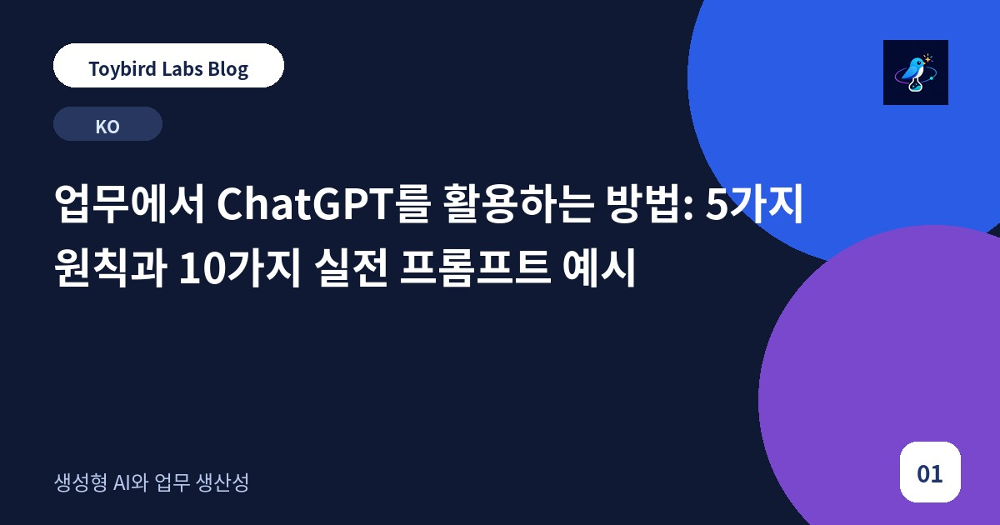
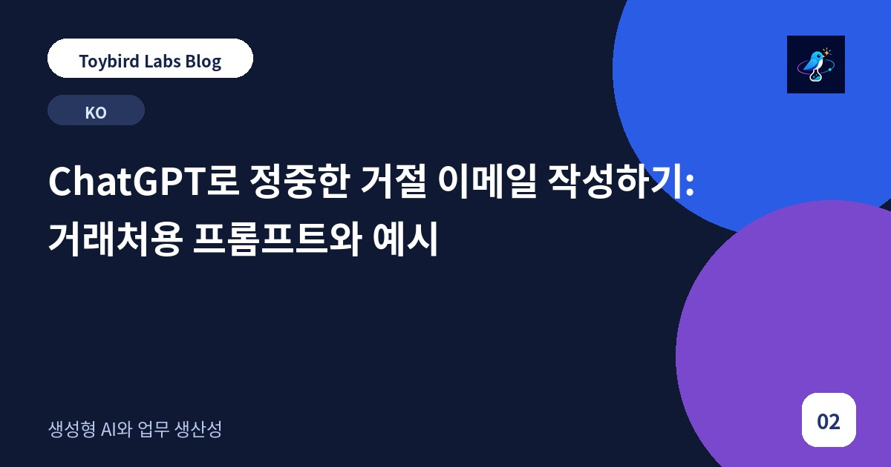
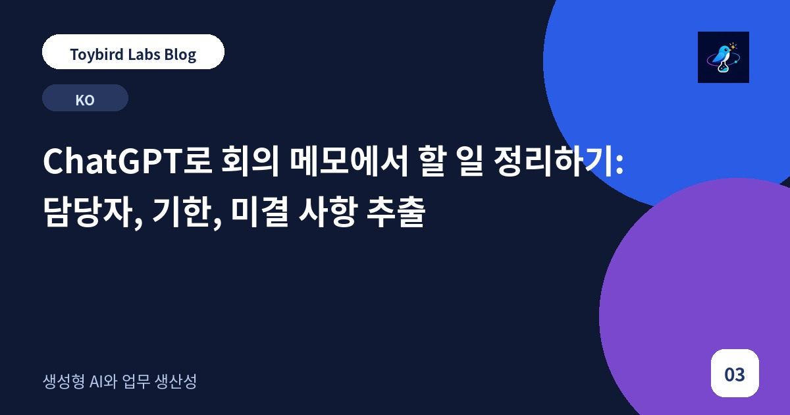
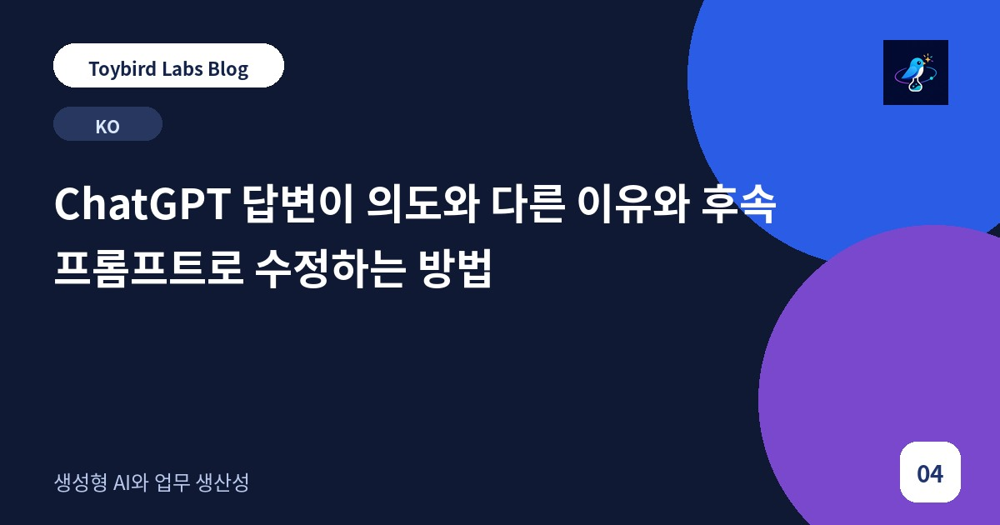
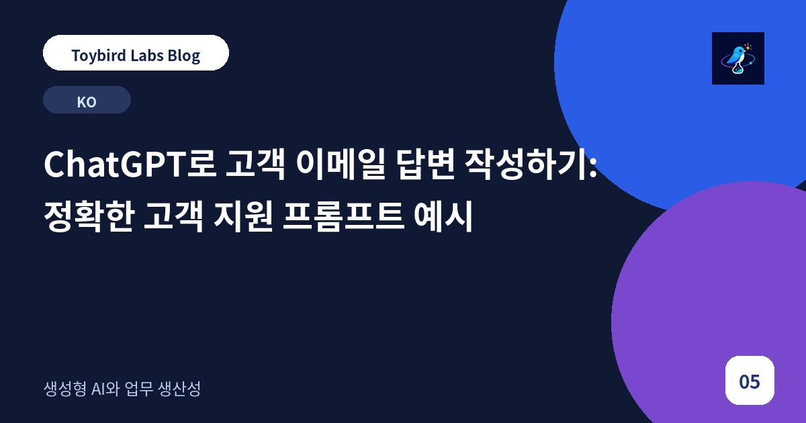
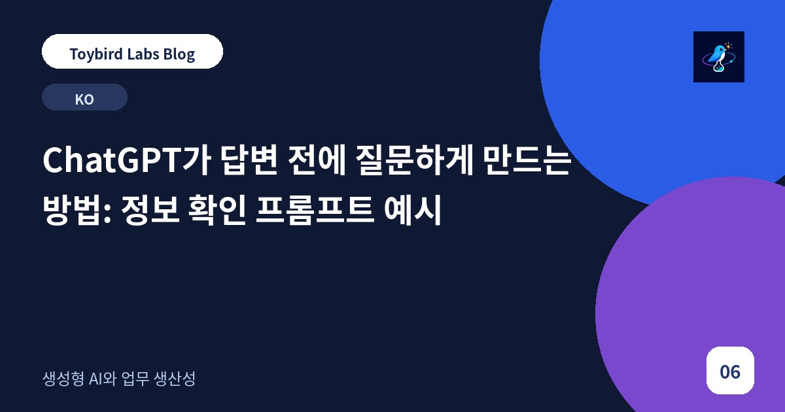
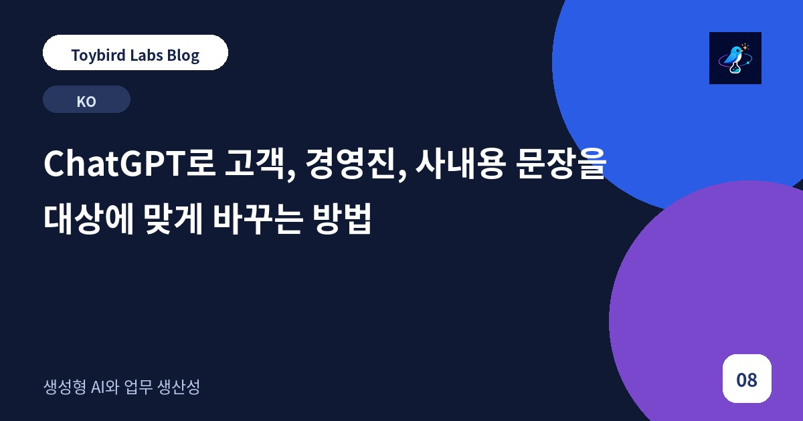

Toybird Labs Blog
일과 학습을 더 효율적으로 만드는 실용 가이드
업무에서 생성형 AI를 활용하는 방법과 Toybird Labs 앱을 실제로 사용하는 팁을 소개합니다.
글 목록
먼저 읽기

업무에서 ChatGPT를 활용하는 방법: 5가지 원칙과 10가지 실전 프롬프트 예시
이메일, 회의, 요약, 비교, 조사, 영업 연습 등 업무에서 ChatGPT를 더 정확하게 활용하기 위한 5가지 원칙과 10가지 실전 예시를 소개합니다.
업무별 실전 가이드

ChatGPT로 정중한 거절 이메일 작성하기: 거래처용 프롬프트와 예시
거래처나 고객의 요청을 명확하면서도 정중하게 거절하는 ChatGPT 프롬프트를 소개합니다. 일정, 할인, 추가 업무를 거절하는 예시와 확인 목록을 포함합니다.

ChatGPT로 회의 메모에서 할 일 정리하기: 담당자, 기한, 미결 사항 추출
정리되지 않은 회의 메모에서 결정 사항, 할 일, 담당자, 기한, 미결 사항을 ChatGPT로 추출하는 방법과 재사용 가능한 프롬프트를 소개합니다.

ChatGPT 답변이 의도와 다른 이유와 후속 프롬프트로 수정하는 방법
ChatGPT 답변이 너무 길거나 일반적이고, 대상이 다르거나 사실과 추측이 섞이는 이유를 확인하고 구체적인 후속 지시로 수정하는 방법을 설명합니다.

ChatGPT로 고객 이메일 답변 작성하기: 정확한 고객 지원 프롬프트 예시
고객의 원문, 확인된 사실, 미확인 정보, 다음 조치를 바탕으로 정확한 고객 지원 이메일을 만드는 ChatGPT 프롬프트와 확인 사항을 소개합니다.

ChatGPT가 답변 전에 질문하게 만드는 방법: 정보 확인 프롬프트 예시
어떤 정보를 제공해야 할지 모를 때 ChatGPT가 최종 답변 전에 부족한 정보를 질문하도록 만드는 방법을 소개합니다. 한 번에 하나, 최대 3개, 선택형 예시를 포함합니다.

ChatGPT로 긴 문서를 업무 목적에 맞게 요약하는 방법
보고서, 정책, 제안서를 읽는 사람과 판단 목적에 맞게 ChatGPT로 요약하는 방법을 소개합니다. 유지할 사실, 출력 구분, 출처 확인 프롬프트를 포함합니다.

ChatGPT로 고객, 경영진, 사내용 문장을 대상에 맞게 바꾸는 방법
같은 내용을 고객, 경영진, 사내 팀, 초보자에 맞게 ChatGPT로 바꾸는 방법과 대상, 문체, 길이, 유지할 사실을 지정하는 프롬프트를 소개합니다.

ChatGPT로 여러 선택지 비교하기: 기준, 비교표, 추천 프롬프트
제품, 서비스, 공급업체, 제안을 ChatGPT로 비교할 때 기준, 우선순위, 누락 정보, 추천 조건을 정하는 방법과 템플릿을 소개합니다.

ChatGPT로 영업 대화 연습하기: 고객 역할과 피드백 프롬프트
ChatGPT를 실제 고객 역할로 설정해 영업 대화를 연습하는 방법을 소개합니다. 한 번에 하나씩 질문하고 종료 후 대화 근거로 피드백하는 프롬프트를 포함합니다.